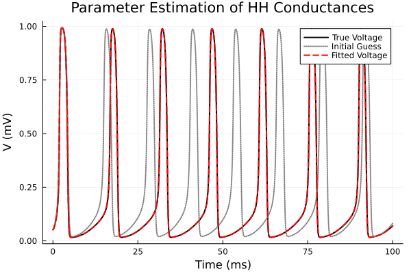

Example 9: Parameter Estimation of Ion Channel Conductances
using MTKNeuralToolkit
using MTKNeuralToolkit.HodgkinHuxley: SodiumChannel, PotassiumChannel, LeakChannel
using ModelingToolkit: mtkcompile, @named
using OrdinaryDiffEq
using Optimization
using OptimizationOptimJL
using SciMLStructures: Tunable, canonicalize, replace
using SymbolicIndexingInterface: parameter_values, setp
using PreallocationTools
using PlotsBuild the True System & Generate Data
top = Scalar()
function build_hh_neuron(name::Symbol; gNa=120.0, gK=36.0)
@named cap = Capacitor(topology=top, C=1.0)
@named na = SodiumChannel(topology=top, g=gNa)
@named k = PotassiumChannel(topology=top, g=gK)
@named leak = LeakChannel(topology=top)
return build_compartment(cap, [na, k, leak]; name=name, V_init=-65.0, topology=top)
end
true_gNa = 120.0
true_gK = 36.0
true_neuron = build_hh_neuron(:true_neuron; gNa=true_gNa, gK=true_gK)
drivers = [(1, 10.0)]
true_net = build_acausal_network([true_neuron]; drivers=drivers, name=:true_net)
println("Compiling true system...")
sys = mtkcompile(true_net.sys)
odeprob = ODEProblem(sys, [], (0.0, 100.0))
timesteps = 0.0:0.1:100.0
println("Generating training data...")
sol = solve(odeprob, Tsit5(); saveat=timesteps)
data = Array(sol)4×1001 Matrix{Float64}:
0.052 0.0534475 0.0564908 0.0606211 … 0.0681739 0.0696186
0.596 0.595799 0.595199 0.594206 0.457714 0.458205
0.317 0.31715 0.317569 0.318246 0.392268 0.391674
-65.0 -64.032 -63.1132 -62.231 -62.3447 -62.1607Setup the Optimization Problem
guess_gNa = 80.0
guess_gK = 20.0
fit_neuron = build_hh_neuron(:fit_neuron; gNa=guess_gNa, gK=guess_gK)
fit_net = build_acausal_network([fit_neuron]; drivers=drivers, name=:fit_net)
fit_sys = mtkcompile(fit_net.sys)
fit_prob = ODEProblem(fit_sys, [], (0.0, 100.0))
gNa_sym = fit_sys.fit_neuron.na.g
gK_sym = fit_sys.fit_neuron.k.g
setter = setp(fit_prob, [gNa_sym, gK_sym])
diffcache = DiffCache(copy(canonicalize(Tunable(), parameter_values(fit_prob))[1]))
function loss(x, p)
prob, timesteps, data, setter, diffcache = p
ps = parameter_values(prob)
buffer = get_tmp(diffcache, x)
copyto!(buffer, canonicalize(Tunable(), ps)[1])
ps = replace(Tunable(), ps, buffer)
setter(ps, x)
newprob = remake(prob; p = ps)
sol = solve(newprob, Tsit5(); saveat=timesteps)
if size(Array(sol)) != size(data)
return Inf
end
return sum(abs2, Array(sol) .- data) / length(data)
end
opt_params = (fit_prob, timesteps, data, setter, diffcache)
adtype = AutoForwardDiff()
optfn = OptimizationFunction(loss, adtype)
optprob = OptimizationProblem(optfn, [guess_gNa, guess_gK], opt_params)OptimizationProblem. In-place: true
u0: 2-element Vector{Float64}:
80.0
20.0Optimize and Plot
println("Solving with initial guesses for visualization...")Solving with initial guesses for visualization...Capture the behavior before optimization to show how far it came
init_sol = solve(fit_prob, Tsit5(); saveat=timesteps)
println("Starting optimization...")
res = solve(optprob, BFGS(); maxiters=300)
println("True conductances: gNa = $true_gNa, gK = $true_gK")
println("Recovered conductances: gNa = $(res.u[1]), gK = $(res.u[2])")Starting optimization...
┌ Warning: Verbosity toggle: max_iters
│ Interrupted. Larger maxiters is needed. If you are using an integrator for non-stiff ODEs or an automatic switching algorithm (the default), you may want to consider using a method for stiff equations. See the solver pages for more details (e.g. https://docs.sciml.ai/DiffEqDocs/stable/solvers/ode_solve/#Stiff-Problems).
└ @ SciMLBase ~/.julia/packages/SciMLBase/jqoB3/src/integrator_interface.jl:967
True conductances: gNa = 120.0, gK = 36.0
Recovered conductances: gNa = 119.97455007745364, gK = 35.99469979060433Solve with the optimized parameters
opt_ps = parameter_values(fit_prob)
opt_buffer = copy(canonicalize(Tunable(), opt_ps)[1])
opt_ps = replace(Tunable(), opt_ps, opt_buffer)
setter(opt_ps, res.u)
opt_prob_final = remake(fit_prob; p=opt_ps)
opt_sol = solve(opt_prob_final, Tsit5(); saveat=timesteps)
p1 = plot(timesteps, data[1, :], label="True Voltage", lw=2, color=:black)
plot!(p1, timesteps, init_sol[1, :], label="Initial Guess", ls=:dot, lw=2, color=:gray)
plot!(p1, timesteps, opt_sol[1, :], label="Fitted Voltage", ls=:dash, lw=2, color=:red)
title!(p1, "Parameter Estimation of HH Conductances")
xlabel!("Time (ms)")
ylabel!("V (mV)")
p1
This page was generated using Literate.jl.